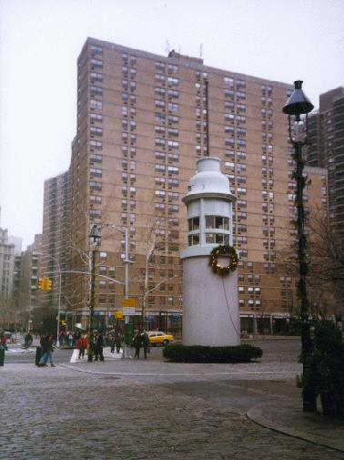
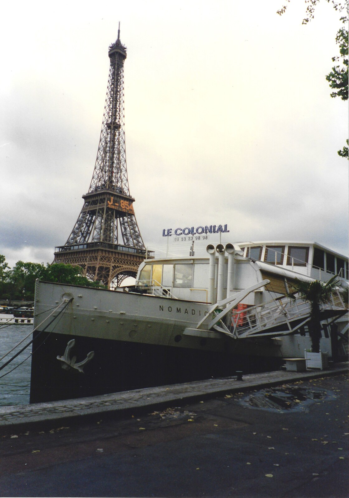
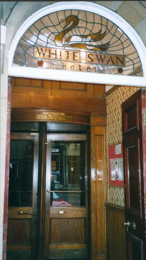
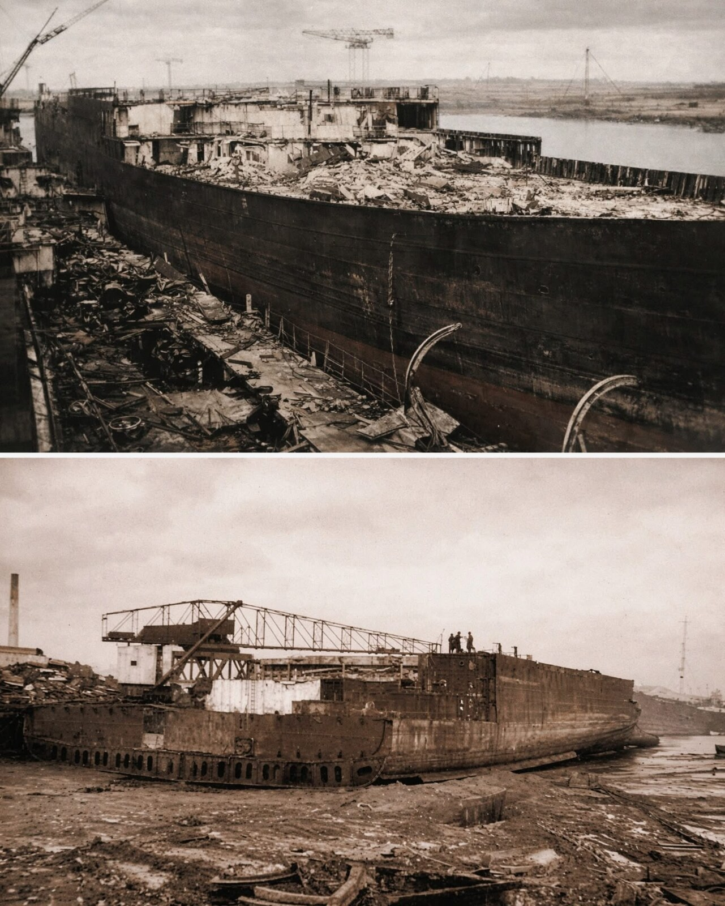
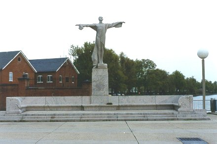
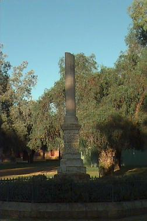
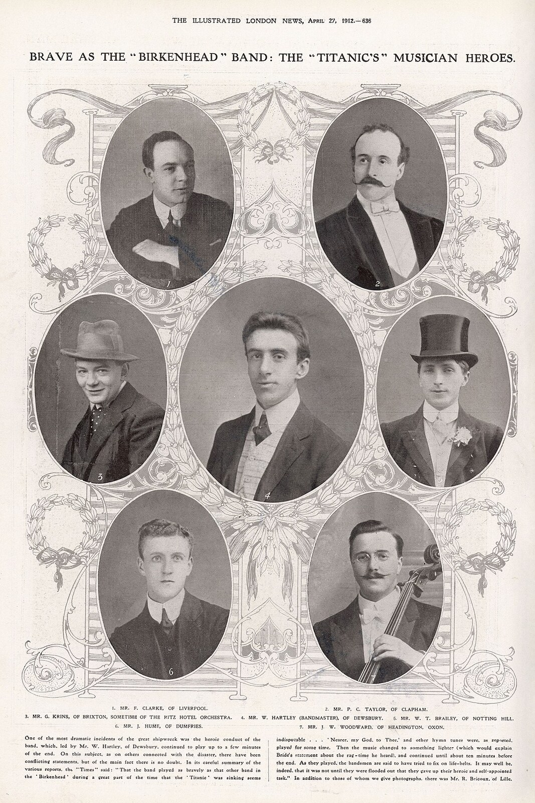
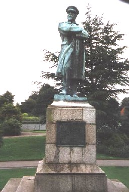
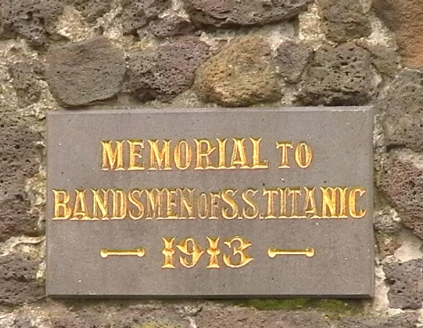
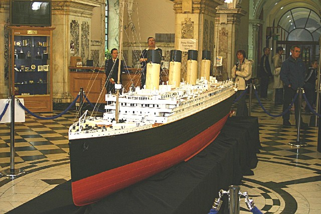

Jump to
This page aims to show some of the memorials and places related to the Titanic, her passengers and crew. All the photographs were taken by myself or friends.
This is the Titanic Memorial Lighthouse on the corner of Fulton Street and Water Street in New York, at the entrance to the South Street Seaport Museum. Raised by public subscription in 1915, it originally stood on the corner of the roof of the Seamen’s Church Institute of New York, at South Street and Coenties Slip.

The inscription on the plaque reads:
T I T A N I C M E M O R I A L L I G H T H O U S E This lighthouse is a memorial to the passengers, officers and crew who died as heroes when the steamship Titanic sank after collision with an iceberg. LATITUDE 41°46' NORTH LONGITUDE 50°14' WEST APRIL 15, 1912 This lighthouse was originally erected by public subscription In 1915 it stood above the East river on the corner of the old Seamen's Church Institute at the corner of South Street and Coenties Slip from 1915 to 1967. The time ball at the top of the lighthouse would drop down the pole to signal twelve noon to the ships in this harbour. This time ball mechanism was activated by a telegraphic signal from the National Observatory in Washington, D.C. In July 1968 the Seamen's Church Institute moved to its present quarters at 15 State Street. That year the Titanic Memorial Lighthouse was donated by the Kaiser-Nelson steel and salvage corporation to the South Street Seaport Museum. It was erected on this corner at the entrance to the museum complex in May 1976 with funds provided by the Exxon Corporation.
South Street Seaport Museum
When this photograph was taken, the Nomadic, the last surviving member of the White Star fleet, was moored on the River Seine in Paris, opposite the Eiffel Tower.

She was originally used as a tender at Cherbourg, taking passengers out to the Olympic and Titanic as they moored outside the harbour, due to the lack of docking facilities for such massive ships. The Nomadic and her sister, the Traffic, were both specially built by Harland and Wolff to service the Olympic class liners. The Traffic was sunk, whilst under German command from occupied France, during WWII. The Nomadic survived, and was later used as a restaurant and a conference centre in Paris. In 2006 she was bought by the Northern Ireland government and brought home to Belfast, where she has been restored and is now open to visitors next to Titanic Belfast.

The Titanic’s sister ship, the Olympic, launched on October 20th 1910, finished its sea trials and brought spectators to Belfast on May 31st 1911, to see the Titanic being launched down Harland and Wolff’s specially constructed slipway. The Olympic, Titanic, and later the Britannic (originally to be named Gigantic) formed a trio known as the “Olympic class” liners designed to provide the greatest luxury ever known on the lucrative transatlantic route to America. The Britannic, launched on February 26th 1914, was “conscripted” as a WWI hospital ship in December 1915, and sunk due to mine or torpedo damage on November 21st 1916 in the Mediterranean. The Titanic made its maiden voyage on April 10th 1912, and met its end on April 15th 1912 after colliding with an iceberg in the Atlantic off the Grand Banks. However, the Olympic, which became known as “Old Reliable”, made its maiden voyage on June 14th 1911 and retired in 1935, despite several accidents and near misses in the intervening years.
When the Olympic was broken up, from 1935, some of its fittings were bought at auction by the White Swan Hotel at Alnwick, England.


The Titanic Women’s Memorial is in Potomac Park, Washington D.C., next to the Washington Channel. People often assume that it is dedicated to the women who died, but in fact it was raised by the women of America, including Titanic widows, as a memorial to their menfolk lost in the tragedy. Originally located at the site of what is now the John F. Kennedy Center for the Performing Arts, it was moved to its present location in 1968.

The Titanic Bandsmen’s Memorial is one of the few memorials in the Southern Hemisphere, and is at the small town of Broken Hill, New South Wales, Australia. It was erected very soon after the sinking, and is in the town’s main park. Thanks to Scott Carnie for sending me these pictures after visiting my web page.


Captain E.J. Smith is one of the central characters in the story of the Titanic. Highly popular with his passengers, some of whom would even change the dates of their trips to travel on his ship, he has been labelled both hero and villain over the years. The statue in the picture stands in Beacon Park, Lichfield, Staffordshire, England.

This memorial to the bandsmen of the Titanic is in Ballarat, Australia. The rotunda (or bandstand) is topped by a fantastic wind vane. Broken Hill in New South Wales, and Ballarat in Victoria, were two of Australia’s biggest mining centres and all mining towns, as in England or Wales, had very strong band or music sub-cultures, and band unions. Strong feelings of brotherhood with their ocean-going counterparts compelled the local bandsmen to raise money for a suitable memorial to be erected. Many thanks to Andrew Rogers for these photographs and the background information.

From Saturday, April 10th to Saturday, April 17th 2004, in cooperation with the City of Belfast and Belfast City Council, “Titanic – The Exhibition” showcased a small portion of its collection at Belfast City Hall, Belfast, Northern Ireland, in the “Titanic at Home Exhibition”. The exhibition included this impressive Titanic model, made by Peter Davies-Garner of Germany. It was constructed from the original working drawings of Harland & Wolff Shipyards. Many thanks to Paul Fryer for the photographs and background information.